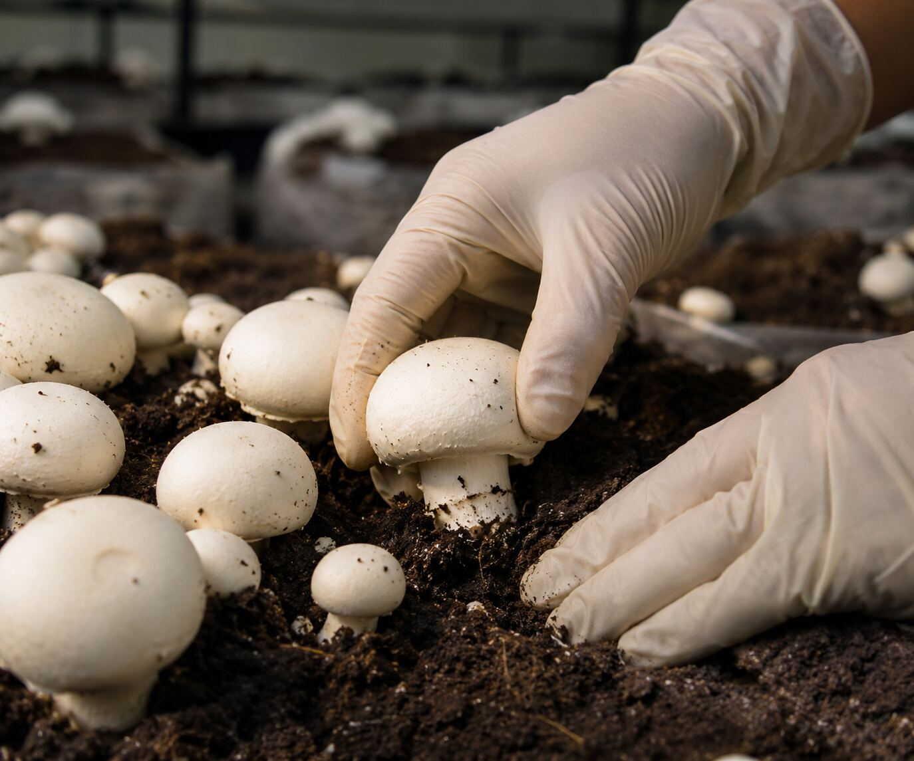

Growing
Harvesting mushrooms: timing, technique and the veil
When to pick, how to pick, and why a few hours make the difference between a premium mushroom and a discounted one.

After weeks of compost, spawn and careful climate control, harvest can look like the easy part. It isn't. Picking is skilled, physical work, and a few hours either way change both the quality and the price of a mushroom.
Reading the veil
Look underneath a young button mushroom and you will see a thin membrane, called the veil, stretching from the edge of the cap to the stem. It covers the gills. As the mushroom matures, the cap expands and the veil tears, exposing the brown gills underneath.
For button mushrooms, the veil is the key to harvest timing:
- Closed cup: veil intact, cap tight and round. This is the premium stage, with the best shelf life and a clean white look.
- Open cup: veil just broken, gills partly visible. Still good to eat but shorter shelf life.
- Flat: cap fully open with dark gills. Stronger flavour, but it bruises and browns faster.
Portobellos are the exception: they are the same species, deliberately left to open fully for their deeper flavour and meaty texture.
Why mushrooms are picked early in the day
We harvest in the early morning, when the mushrooms are at their coolest and firmest. A mushroom picked cool loses less moisture, bruises less, and needs less work from the cold room to bring it down to storage temperature.
Picking technique
Good pickers use a gentle twist and lift rather than a straight pull. Holding the cap lightly, they rotate the mushroom so it comes free with its base, without dragging up a clump of casing or disturbing the small pins growing next to it.
The base of the stem is then trimmed with a sharp knife to remove casing soil, and the mushroom goes straight into a clean tray or crate. Every extra handling step risks a bruise, so the aim is to touch each mushroom as few times as possible.
A thumbprint on a mushroom cap turns brown within hours. Gentle hands are part of quality control.
Flushes and rhythm
Mushrooms don't arrive all at once. They come in flushes, waves of growth roughly a week apart. Within a flush, pickers usually pass through the room more than once a day, because mushrooms that were too small in the morning can reach the ideal size by afternoon.
The first two flushes usually give most of the yield. After the final flush, the room is emptied, cleaned and prepared for the next crop.
Oyster and shiitake harvests
- Oyster (dhingri): harvested as a whole cluster when caps have flattened but before the edges curl upwards. The cluster is twisted or cut off at its base.
- Shiitake: picked when the cap is mostly open but the edge is still slightly rolled under.
From the bed to the cold room
Harvest only matters if the freshness survives. On our farm, mushrooms are graded by size and moved into cold storage quickly, held between 2 and 4 °C, and packed cold for same-day dispatch. Read more about why that matters in our article on the mushroom cold chain.
Need fresh mushrooms?
Maba Agro supplies organically grown button, oyster, shiitake and portobello mushrooms to mandis, hotels and homes across North India.